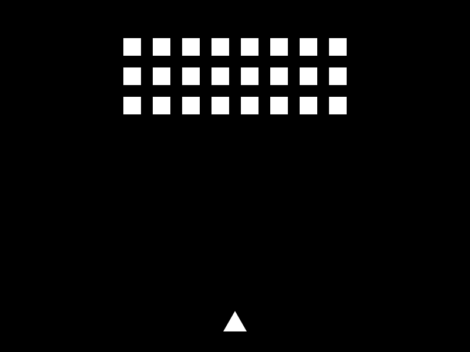
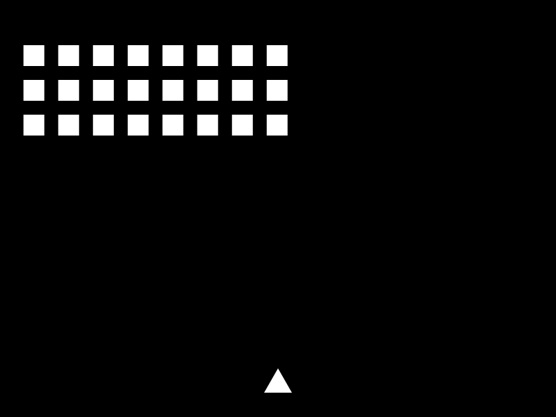
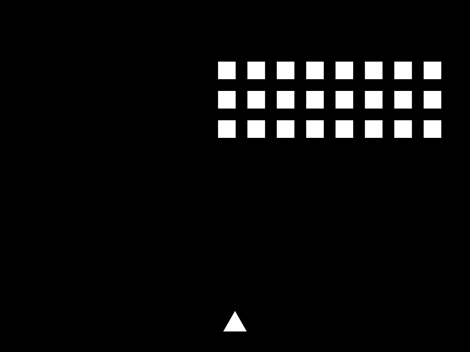
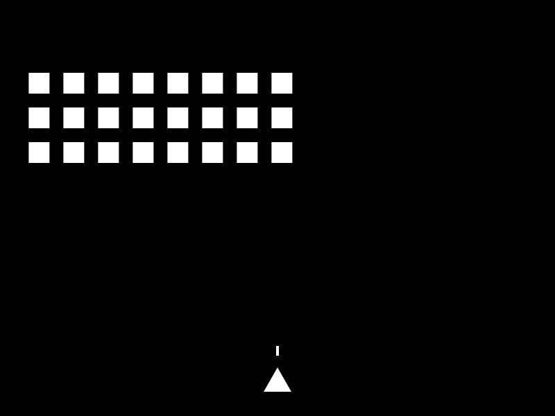
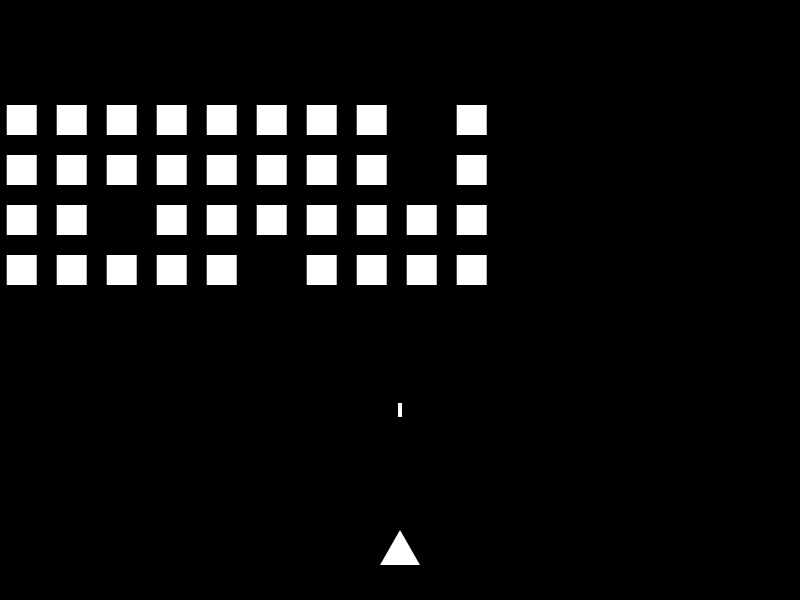
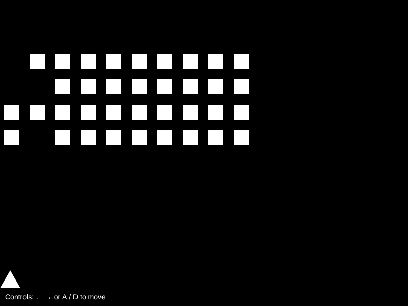
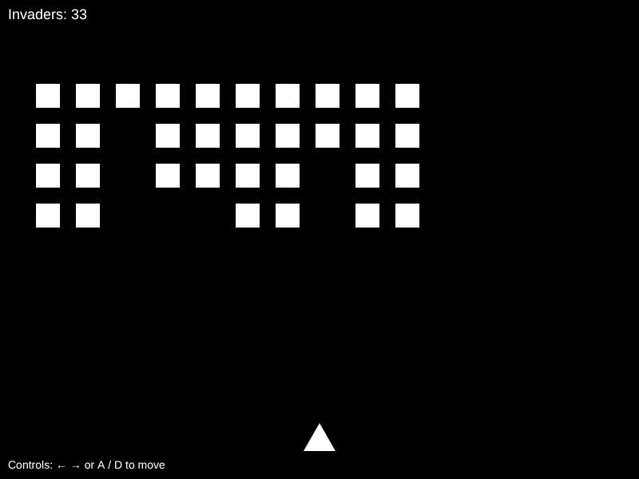
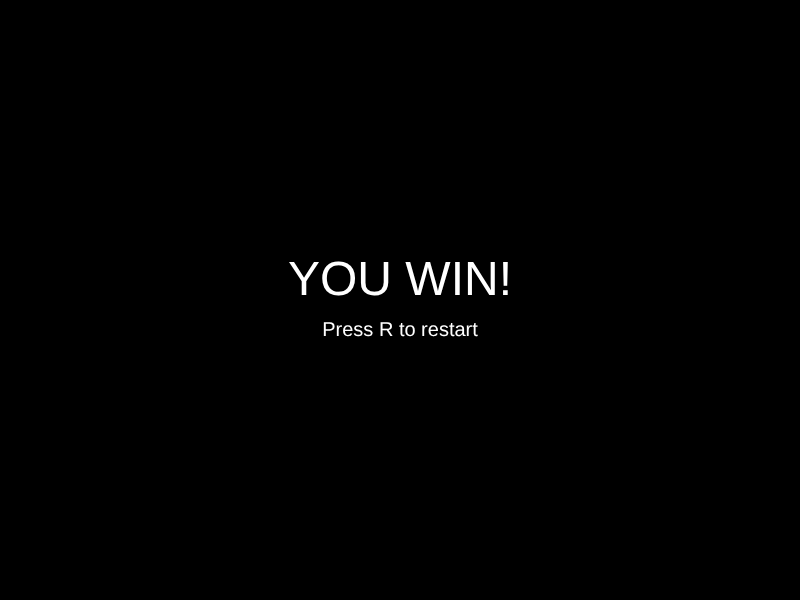
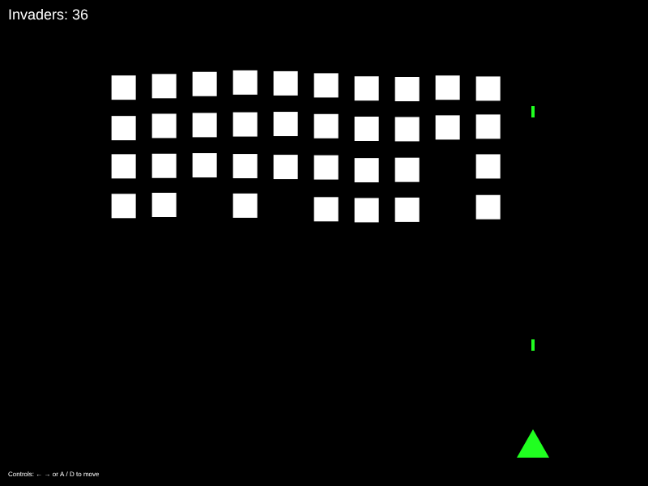

Time and Oscillation: Space Invaders in p5.js
Ian Robinson, GIXD-501, Fall 2026 · Week 8 homework · Eight iterations
I based this on Space Invaders. The moving shapes are the invader squares, which travel in a repeated swing-and-drop pattern. They sweep left and right on a sin() wave, speeding up as you clear them, and every time the wave reaches a wall they step down a row, until the grid resets to the top and the pattern starts again. The timed movement is the bullet: a small rectangle that shoots straight up from the player at random intervals measured with millis(). The triangle itself is the player, steered with the keyboard.
How it meets the brief
| Requirement | Where it is |
|---|---|
| Trigonometric function for repeated motion | The invaders' swing is sin(phase) * 150, and the drop counts each time that sine wave reaches a wall (floor((phase + HALF_PI) / PI)). The swing-and-drop pattern repeats forever. |
| Time function for the interval | The bullet fires when millis() passes nextShotTime, then a new interval is picked. |
| De-synchronized movements | The invaders run on the sine clock (frames). The bullets run on a random millisecond timer of 0.5–2 seconds. They never line up, so the bullets hit different columns every pass. The swing also speeds up as invaders are cleared, so its rhythm keeps changing too. |
| Randomness and Perlin noise | random(200, 1200) picks each bullet's interval, so the firing rhythm is never the same. noise() gives every invader its own organic wobble. |
Final sketch Iteration 8
Click the game, then use ← → or A / D to move. Shots fire on their own. Clear all 40 invaders before the grid resets to win, and press R to restart.
Iteration 1: Static layout
I set up the composition before adding any motion: three rows of eight white squares centered on a black canvas, with a triangle for the player at the bottom. My first try broke because I closed draw() too early, so the grid code ran before the canvas existed.

Iteration 2: The invaders sway
I made the whole grid swing left and right with sin(frameCount * 0.02), which gives a smooth back-and-forth that repeats forever. I started with an 80px swing, but it was too small to read as invaders moving, so I pushed it up to 200px.

Iteration 3: Dropping at the walls
Like the original game, the invaders now step down 20px every time they hit a wall. I chose both walls, not just one. Because the swing reaches a wall every half wave, I count those edge hits with floor((phase + HALF_PI) / PI). The grid resets to the top before it reaches the player.

Iteration 4: The player fires on a random timer
The triangle now shoots a small rectangle after a random wait of 1–5 seconds. I use millis() to check when that time has passed, then pick a new random wait. The shots run on their own timer, so they never sync up with the swing. At this point they pass straight through the invaders.

Iteration 5: Hits
When a shot overlaps an invader, both disappear, and the full grid comes back each time it loops to the top. The first version felt sluggish, so I tuned it: four rows of ten invaders, shots every 0.5–2 seconds and a slower, steadier swing. Since the shots come from the center while the grid swings, holes open up in different columns each time.

Iteration 6: Player control
The player can now steer the triangle with the arrow keys or A/D, and there's a controls label in the bottom left. A/D didn't work at first because p5.js 2.x reads keyIsDown('a') rather than the old number codes. Aiming changes the piece from something you watch into something you play.

Iteration 7: Counter and win condition
I added an invader counter in the top left that counts down from 40 to 0. Clearing every invader before the grid loops back to the top brings up a "YOU WIN! Press R to restart" screen, and R resets the invaders, the shots, the player and the swing. I also brought the swing down to 150px so the wider grid stays on screen. Claude was mainly used to get the functions for this iteration: the counter loop, the win screen and the keyPressed() restart.


Iteration 8: Green player, wobble and speed-up
I made the player the classic Space Invaders green and moved the reset from % 360 to % 300, because the invaders were sliding about two rows past the player before resetting. Now they stop just above the triangle. I added Perlin noise() so each invader wobbles on its own, which makes the grid feel alive instead of rigid. I also made the invaders speed up as you clear them, using map() on the number left, like the original game. The last few get frantic. Shots now fire every 0.2–1.2 seconds to keep up. It's hard, but I finally beat it.

Tools
Built in the p5.js web editor (p5.js 2.x). I used Claude throughout to explain p5 functions, suggest code for each step and debug errors such as missing braces and the A/D key issue. I made the design choices, tuning and testing myself.